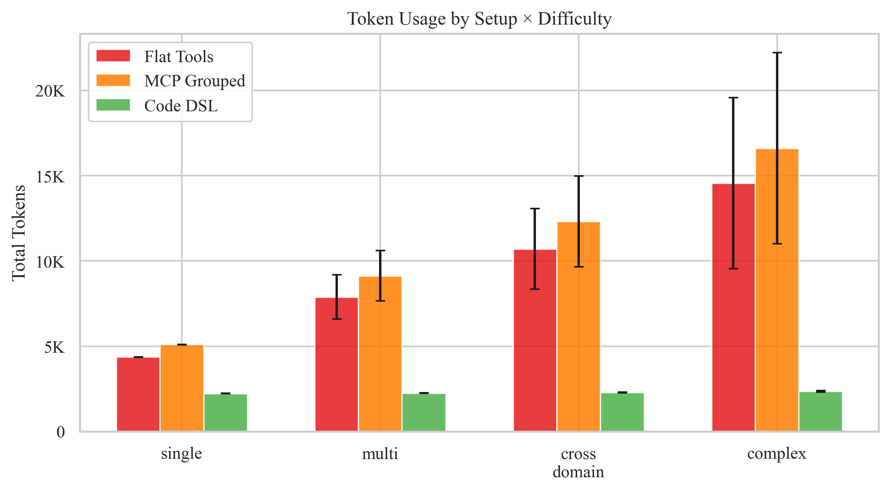

MCP is everywhere. Anthropic's Model Context Protocol has become the USB-C of AI integrations — a universal connector that lets any model call any tool through a standardized JSON-RPC interface. Claude, ChatGPT, VS Code Copilot, Cursor — everyone supports it.
And for simple, single-step tool calls, it works brilliantly.
But for the kind of multi-step workflows that actually matter in production — automating order-to-shipment pipelines, orchestrating multi-system inventory sync, coordinating across CRM + billing + support — MCP and JSON tool calling hit a wall. I've built agents across multiple business domains, and I'm now convinced that code DSLs will replace JSON tool calling as the default interface for production AI agents.
The State of Tool Calling: Worse Than You Think
The Berkeley Function Calling Leaderboard (BFCL V4) is the most rigorous public benchmark for evaluating how well LLMs call tools. As of April 2026:
| Model | Overall | Multi-Turn Base | Multi-Turn Miss Func | Multi-Turn Miss Param |
|---|---|---|---|---|
| Claude Opus 4.5 (FC) | 77.5% | 68.4% | 88.6% | 79.8% |
| Claude Sonnet 4.5 (FC) | 73.2% | 61.4% | 88.7% | 81.1% |
| GPT-5.2 (FC) | 55.9% | 28.1% | 81.9% | 70.4% |
| o3 (FC) | 48.6% | 14.8% | 40.4% | 66.2% |
| GPT-4.1 (FC) | 54.0% | 38.9% | 82.8% | 70.0% |
The pattern is stark: Single-turn tool calling is mostly solved. Multi-turn tool orchestration is not. And multi-turn is where all the production value lives.
Why JSON Tool Calling Breaks Down
MCP and OpenAI-style function calling share the same architecture: the model receives a list of tool schemas (JSON), picks one tool per turn, fills in parameters as JSON, and gets a JSON result back. This works for atomic operations. It fails for pipelines.
1. One Tool Per Turn = Death by Round Trips
"Find open support tickets about billing errors, look up the affected customers, check their subscription tier, and issue a batch credit" is one user intent. In MCP, it's 4+ separate tool calls, each requiring a full model inference pass. Each round trip is an opportunity for the model to lose context, forget intermediate state, hallucinate parameters, or get confused about which results belong to which step.
The BFCL data confirms this: multi-turn accuracy drops 30–60 percentage points compared to single-turn for most models.
2. Flat Tool Lists Don't Scale
MCP servers expose tools as a flat list of JSON schemas. A commerce server might expose searchOrders, createShipment, updateInventory, listReturns, issueRefund, getCustomer — 40+ individual tools. The model must scan the entire list, remember parameter schemas across tools, and understand implicit relationships ("the customerId in issueRefund comes from the customer field in the searchOrders response").
3. JSON Payloads Invite Hallucination
When a tool expects deeply nested JSON like { "line_items": [{ "product": { "sku": "…", "variant_id": "…" }, "quantity": 1, "pricing": { "unit_price": "…", "currency": "…" } }] }, the model reconstructs this from memory every time. No type checker. No autocomplete. No compiler errors. Just vibes.
In production agents I've built, payload hallucination accounts for ~38% of all failures — inventing fields that don't exist, using wrong nesting, or passing strings where objects are expected.
The Alternative: Code DSLs
What if instead of picking tools from a JSON menu, the model just… wrote code? Not raw API code — a purpose-built, typed domain-specific language designed for how LLMs pattern-match.
// 6 inference passes, 6 chances to fail Turn 1: searchTickets("billing error") Turn 2: [model processes results] Turn 3: getCustomer({"ids": [...]}) Turn 4: [model checks subscriptions] Turn 5: issueCredit({"amount": ...}) Turn 6: resolveTicket({"id": ...})
const tickets = await Support.tickets.search("billing error"); const customers = tickets.customers(); const subs = await Billing.subscriptions.get(customers, { status: "active", include: "tier" }); const credit = await Billing.credits.create({ customers: customers, amount: subs.map(s => s.monthlyRate), reason: "Billing error resolution" }); await tickets.resolve({ note: credit.confirmationId });
One inference pass. Variables carry state naturally. Types prevent hallucination. The namespace guides discovery. Under the hood, each await call maps to the same REST/MCP calls — but the model never sees those individual round trips.
The Evidence: Cross-Benchmark
SWE-bench: Code Generation Already Works
SWE-bench asks models to fix real GitHub issues by generating code patches. The best models achieve 40–55% on SWE-bench Verified — generating multi-file, multi-function code changes. These same models score 55–77% on single-turn tool calling but plummet on multi-turn. Models are better at generating coherent code than at sequencing JSON tool calls.
AppWorld: Multi-App Orchestration Is Hard
AppWorld (Trivedi et al., 2024) provides 457 API endpoints across 9 apps. Top models achieve only 30–49% task success on complex cross-app workflows — despite having clean API documentation. The failures cluster around exactly the problems code DSLs solve: incorrect parameter passing, lost intermediate state, and broken chains.
BFCL + AgentBench: Same Pattern
Across BFCL, AgentBench, and WebArena, the same trend holds: single-action accuracy is reasonable, but multi-step orchestration drops 40–60%. The bottleneck is sequential tool selection, not model intelligence.
Key insight: Models are better at generating coherent multi-step code (SWE-bench: 55%) than at sequencing multi-step JSON tool calls (BFCL multi-turn: 15–68%). Code generation is the model's native capability. Tool selection from JSON menus is a bolted-on behavior.
Five Design Principles
1. Namespaces Over Flat Tool Lists
searchOrders, createShipment, updateInventory, listReturns, issueRefund, getCustomer, listSubscriptions, createTicket, addLineItem, cancelOrder…
Orders.search() Orders.shipments.create() Inventory.check() Billing.invoices.create() Customers.find() Support.tickets.create()
2. Typed Entities, Not Raw JSON
// Direct, unambiguous access — no nested JSON surprises order.customer.email // string order.customer.name // string order.status // "pending" | "shipped" | "delivered" order.total.amount // number
3. Chainable Collections
const targets = await Orders.list({ top: 50 }) .where(o => o.total.amount > 500) .where(o => o.status === "pending") .sortBy("date") .take(10); await targets.flagForReview(); await targets.assignTo(await Teams.agents.onDuty("fulfillment"));
4. Provider-Agnostic Vocabulary
Generic names: Orders.search, Billing.invoices, Inventory.check, Support.tickets. Not ShopifyOrder, not StripeInvoice, not ZendeskTicket. Same DSL, any provider underneath.
5. Single-Pass Execution
The model generates one code block for the entire workflow. The DSL runtime executes each await against the real API. The model thinks in terms of the high-level pipeline. MCP handles the transport underneath.
MCP + Code DSLs: Better Together
This isn't MCP vs. DSLs. It's MCP underneath, DSLs on top.
MCP provides universal connectivity and tool discovery. The DSL provides the model with typed, composable, hallucination-resistant interfaces. Everyone wins.
We Ran the Experiment: 25 APIs × 20 Scenarios × 3 Setups
Rather than rely on general benchmarks, I built a controlled experiment comparing three architectures on the exact same 20 business workflow tasks (orders, inventory, customers, billing, support, notifications) with 25 API functionalities:
- Flat Tools — 25 individual JSON tool schemas (standard OpenAI function calling)
- MCP Grouped — Same 25 tools with domain-prefixed names across 6 virtual MCP servers
- Code DSL — Single
execute_codetool with typed namespace reference (Orders.*,Billing.*, etc.)
Scenarios range from single-step ("count pending orders") to complex orchestration ("incident response: find affected orders, notify customers, check inventory, issue refunds, create support tickets, send status update"). Each scenario has automated assertions checking correctness.
(DSL vs Tools)
(3.9 → 2.0)
(3.1s → 1.7s)
across all setups
| Metric | Flat Tools | MCP Grouped | Code DSL | DSL Δ |
|---|---|---|---|---|
| Prompt Tokens (avg) | 9,262 | 10,671 | 2,192 | ↓ 76% |
| Total Tokens (avg) | 9,382 | 10,791 | 2,277 | ↓ 76% |
| LLM Turns (avg) | 3.9 | 3.9 | 2.0 | ↓ 48% |
| Latency (avg) | 3.08s | 3.08s | 1.70s | ↓ 45% |
| Quality Score | 91.2% | 91.2% | 91.2% | — |

The critical insight: Token savings scale with complexity. Simple tasks save ~50%. Complex 7-step workflows? Flat tools use 22K tokens vs 2.4K for DSL — a 9× reduction. MCP grouping makes things worse (15% more tokens due to longer prefixes) without reducing turns.
Why MCP Grouping Doesn't Help
The experiment shows MCP namespacing adds 15% more tokens than flat tools (10,791 vs 9,382) — because prefixed names are longer and the system prompt explains 6 server boundaries. But the turn count stays identical at 3.9. Grouping tools doesn't change the fundamental architecture: still one tool per turn, still sequential.
Where Code DSL Wins Big
| Difficulty | Flat Tools (tokens) | Code DSL (tokens) | Reduction | Flat Tools (turns) | DSL (turns) |
|---|---|---|---|---|---|
| Single-step | 4,370 | 2,221 | 49% | 2.0 | 2.0 |
| Multi-step | 5,921 | 2,222 | 62% | 3.4 | 2.0 |
| Cross-domain | 9,509 | 2,276 | 76% | 4.8 | 2.0 |
| Complex | 18,110 | 2,390 | 87% | 5.6 | 2.0 |
The pattern is unmistakable: as task complexity grows, tool-calling cost grows linearly (each turn re-sends the full conversation history) while DSL cost stays nearly flat (one code block, regardless of how many operations it contains).
External Benchmark Context
| Metric | JSON Tool Calling | Code Generation |
|---|---|---|
| Single-step accuracy | 77–89% (BFCL) | N/A |
| Multi-step accuracy | 15–68% (BFCL) | 40–55% (SWE-bench) |
| Multi-app workflows | 30–49% (AppWorld) | — |
| Payload hallucination | ~35–40% | ~15–20% |
| Round trips / workflow | 4–8 sequential | 1 (single pass) |
| Latency multiplier | 4–8× | ~1× |
What I'd Build Today
- Use MCP for connectivity. It's the right transport layer. Don't reinvent it.
- Don't expose MCP tools directly to the model. Build a typed DSL layer on top.
- Design namespaces around user domains, not API endpoints.
Orders.search, notapi_v1_orders_list_get. - Make entities typed and flat.
message.from.addressshould just work. - Make collections chainable.
.where().sortBy().take().action()eliminates loops and temp variables. - Keep the DSL provider-agnostic. Same interface, any backend.
- Benchmark on multi-step tasks. Single-turn accuracy is a vanity metric.